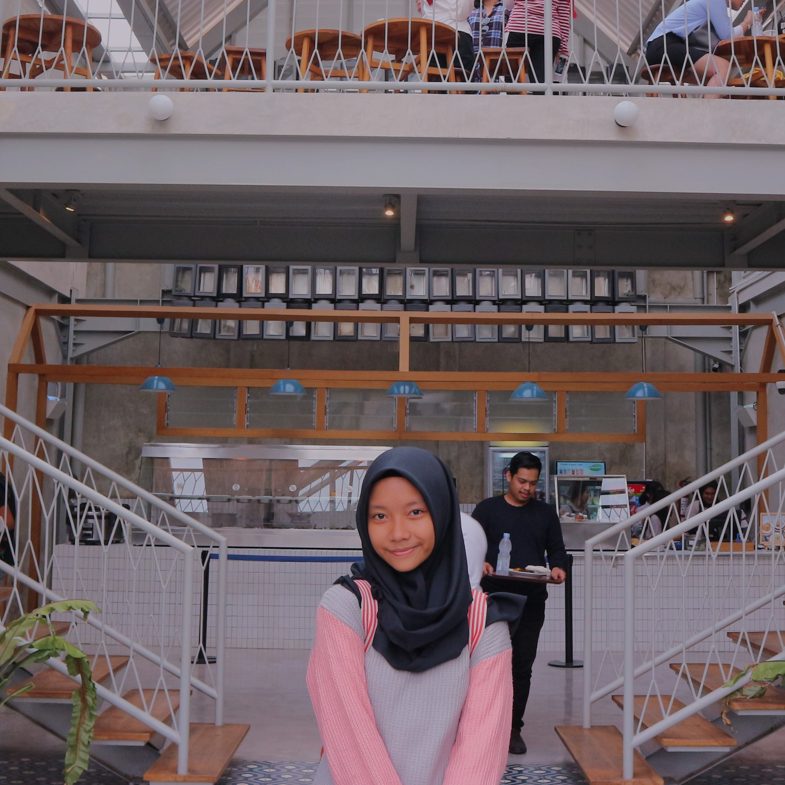

Konnichiwa!

Welcome to my website
Biodata
- Nama Lengkap : Intan Titis Setyaningrum
- Nama Panggilan : Intan
- Tempat, Tanggal Lahir : Bekasi, 24 Desember 2002
- Tinggi Badan : 158 cm
- Berat Badan : 45 kg
- Status : Pelajar
- Pendidikan : SMK - SMAK Bogor
- Alamat : Setu Sela Jl. Mandor Naiman 003/001 No. 10 Kel. Pasir Jambu Kec. Sukaraja Kab. Bogor 16710
- Telepon/HP : 082125933437
- Email : intan.titis12@gmail.com
- Hobi : Menari dan menyanyi
Deskripsi Hobi
Hobi saya adalah menari. Saya mengikuti ekstrakulikuler tari tradisional di sekolah. Saya mengikuti ekskul menari sejak saya masih duduk di sekolah TK (Taman Kanak-Kanak). Sejak saya TK, saya selalu menari di berbagai acara sekolah. Seperti acara kenaikan kelas dan perpisahan. Saat saya duduk di SD (Sekolah Dasar), saya diminta untuk menari di acara pembukaan TK guru tari saya. Saat saya duduk di SMP (Sekolah Menengah Pertama), banyak pengalaman yang saya dapatkan, seperti :
- Mendapat Juara Harapan 1 pada Festival Kaulinan Urang Lembur tingkat Kota Bogor
- Mendapat Juara 2 pada Lomba Tari Tradisional Se-Jabodetabek 2017
- Menari pada acara Gelar Karya Tari Koreografer Banten VI 2017
- Menari pada acara Pertemuan Ilmuwan Perikanan di Gedung Kusnoto Pusat Penelitian Biologi - LIPI
Di SMK - SMAK Bogor, saya juga mengikuti ekstrakulikuler Tari Tradisional. Saya mendapat kesempatan untuk menari pada acara perpisahan angkatan 60 dan angkatan 61, serta pada acara MPLS (Masa Pengenalan Lingkungan Sekolah) tahun 2019.